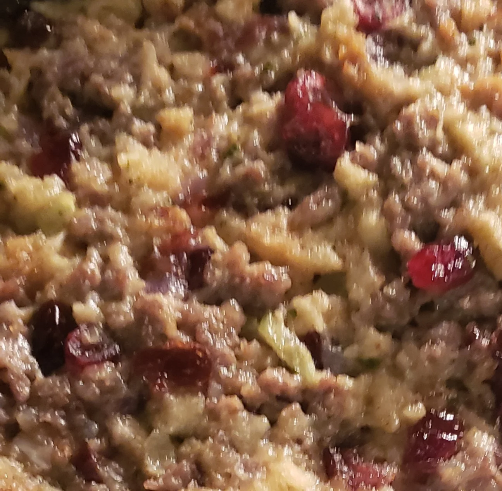

Sausage Stuffing

Simple stuffing in about 25 minutes
This hack on boxed stuffing is so easy but so good that your guests will think you made it from scratch!" says fabeveryday. "Ground sausage with sage adds an especially nice flavor, but you can make this with any mild ground breakfast sausage.
Ingredients
- 1 (16 ounce) package ground breakfast sausage
- 1 cup chopped celery
- 1 cup chopped onion
- 3 cups water
- ½ cup butter
- 2 (6 ounce) packages dry bread stuffing mix
Directions
- Combine sausage, celery, and onion in a skillet over medium heat. Cook, stirring frequently, until sausage is browned and crumbled, 5 to 7 minutes. Transfer cooked mixture to a plate lined with paper towels to soak up excess oil.
- Pour water into a large saucepan and bring to a boil. Stir in butter until melted. Add stuffing mix, cover, and remove from heat. Let stand 5 minutes. Add cooked sausage mixture and stir to combine.